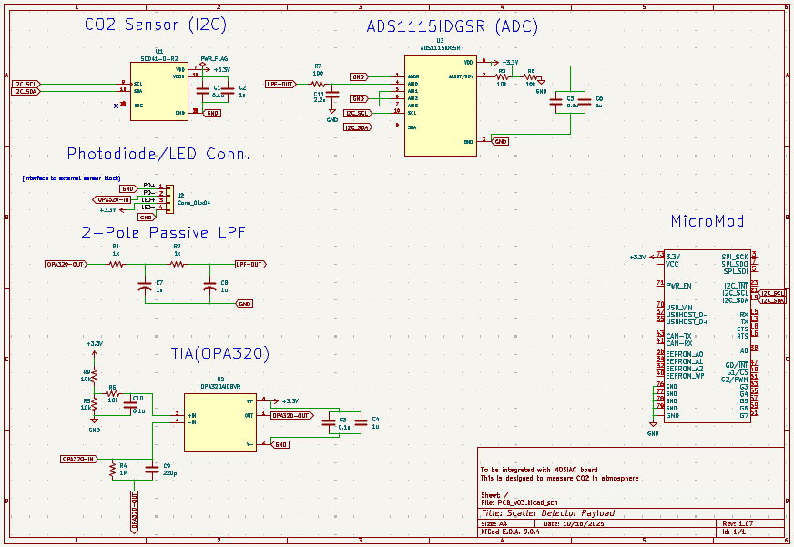
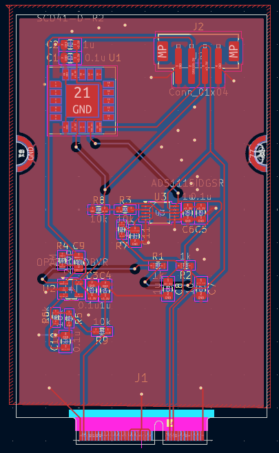
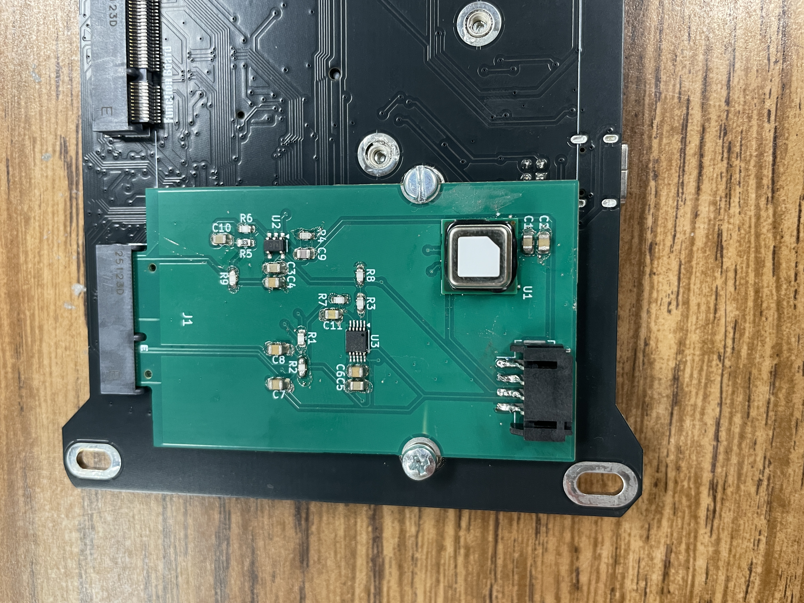
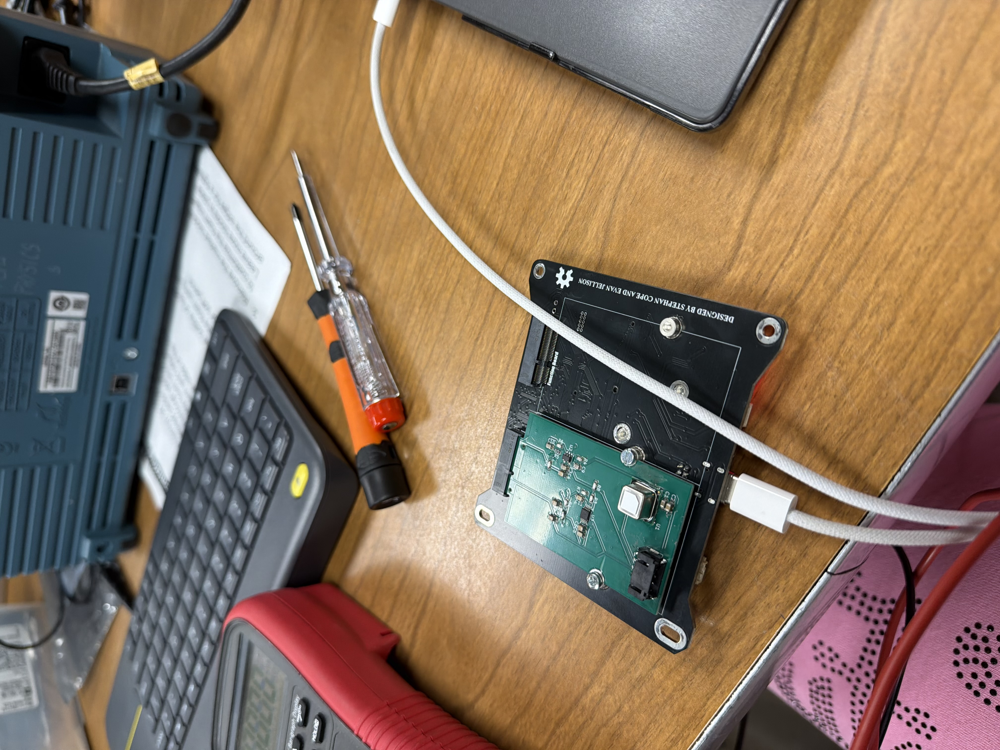
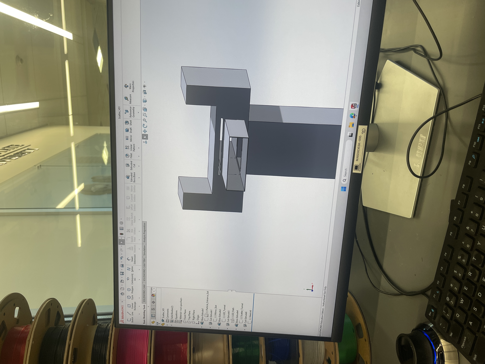

System Architecture & Design
The system was designed as a modular sensing pipeline converting optical scatter into a measurable electrical signal. The architecture integrates a photodiode sensing interface, analog signal conditioning, filtering, and ADC-based digitization for embedded processing.
System Schematic

- Photodiode converts scattered light into current signal
- OPA320-based TIA converts current to voltage
- 2-pole passive LPF reduces high-frequency noise
PCB Layout

- Compact layout optimized for HAB payload constraints
- Separated analog and digital regions
- Short trace routing for sensitive analog paths
PCB Design & Hardware Integration
The PCB was designed to support low-noise analog measurements while interfacing with a MicroMod processor via I²C. Special attention was given to grounding strategy, component placement, and minimizing parasitic effects in the analog front-end.
Design Considerations
- Teensy processor for scalability
- Decoupling capacitors placed near IC power pins
- Ground plane used for noise reduction
Hardware Integration
- ADS1115 ADC used for high-resolution measurement
- I²C communication with MicroMod processor
- External connector for photodiode/LED interface

Analog Front-End & Signal Conditioning
The analog front-end was designed to accurately capture low-level photodiode signals. A transimpedance amplifier (TIA) converts current to voltage, followed by a passive low-pass filter to suppress noise and stabilize the signal prior to digitization.
TIA Design
- OPA320 selected for low noise and rail-to-rail performance
- Feedback resistor sets gain for photodiode current range
- Stability ensured with feedback capacitor
Filtering
- 2-pole passive LPF reduces high-frequency noise
- Improves ADC measurement stability
- Prevents aliasing in digital sampling

Mechanical Design & Optical Isolation
- Ensure controlled optical path for scatter detection
- Minimize external light interference
- Support stable sensor alignment
